Firmware, tools, and instruments. Firmware, outils et instruments.
I'm Sam. I've been pulling electronics and mechanics apart since I was a kid, and I don't like staying where it's comfortable. Sodwave is where I build — from groovebox firmware played by thousands, to automation that's run untouched for fifteen years. Je suis Sam. Je démonte l'électronique et la mécanique depuis l'enfance, et je n'aime pas rester là où c'est confortable. Sodwave, c'est là que je construis — du firmware de groovebox joué par des milliers de gens jusqu'à de l'automatisation qui tourne sans entretien depuis quinze ans.
AboutÀ propos
Electronics and mechanics have fascinated me since I was young. I'm the kind of person who doesn't like to stay on a comfortable subject — I like a challenge, and the fastest way to learn one is to build the thing. L'électronique et la mécanique me fascinent depuis tout petit. Je suis du genre à ne pas rester sur un sujet confortable — j'aime les défis, et la façon la plus rapide d'en apprendre un, c'est de le construire.
Over the years that's meant websites and Android apps, 3D modelling and printing, music and video games, enterprise software, industrial automation, electric guitars by hand, an operating system for retro handhelds, ESP32 boards — and lately, firmware that turns a small MIDI keyboard into a full instrument. Different fields, same instinct: understand it deeply, then make it do something it wasn't supposed to. Au fil des ans, ça a donné des sites web et apps Android, de la modélisation et de l'impression 3D, de la musique et des jeux vidéo, des logiciels d'entreprise, de l'automatisation industrielle, des guitares électriques faites main, un système d'exploitation pour consoles rétro, des cartes ESP32 — et dernièrement, du firmware qui transforme un petit clavier MIDI en véritable instrument. Des domaines différents, le même réflexe : comprendre à fond, puis lui faire faire ce qu'il n'était pas censé faire.
ProjectsProjets
Four things I build around small M-VAVE keyboards and their sound engines — free firmware that turn a $60 MIDI keyboard into a real instrument (SLOOP and Clipper on the FM-1, SLOOP Pro on the bigger SMK-37), and a full DAW that runs in your browser. Open each one for details. Quatre projets autour des petits claviers M-VAVE et de leurs moteurs de son — des firmware libres qui transforment un clavier MIDI à 60 $ en véritable instrument (SLOOP et Clipper sur le FM-1, SLOOP Pro sur le SMK-37, plus grand), et un DAW complet qui tourne dans ton navigateur. Ouvre chacun pour les détails.

A four-track groovebox you play with your hands.Un groovebox quatre pistes qui se joue aux mains.
Three synths and a drum machine, twelve engines, a step sequencer, song mode and a full web editor — no computer needed to perform. Trois synthés et une boîte à rythmes, douze moteurs, un séquenceur, un mode song et un éditeur web complet — aucun ordinateur pour jouer.
SLOOP with pads, faders and 37 keys.SLOOP avec des pads, des faders et 37 touches.
The same SLOOP groovebox on the M-VAVE SMK-37: 37 velocity keys, 16 RGB pads, 4 faders with 5 banks, 8 knobs, wheels, a sustain pedal and a DAW mode. Le même groovebox SLOOP sur le M-VAVE SMK-37 : 37 touches dynamiques, 16 pads RGB, 4 faders sur 5 banques, 8 knobs, des molettes, une pédale de sustain et un mode DAW.

A deep synthesizer, 23 engines, 407 sounds.Un synthé profond, 23 moteurs, 407 sons.
The synth side taken all the way: virtual analog, FM, wavetable, vector, physical models — plus HYBRID, a deep voice editable in the browser. Grew out of SLOOP. Le versant synthé poussé à fond : analogique virtuel, FM, wavetable, vectoriel, modèles physiques — et HYBRID, une voix profonde éditable dans le navigateur. Né de SLOOP.

A full DAW in the browser, on the real engines.Un DAW complet dans le navigateur, sur les vrais moteurs.
Built on the real SLOOP and Clipper engines: arrange, sequence, mix and export complete songs — free, installable, works offline. Nothing to install to try it. Bâti sur les vrais moteurs de SLOOP et Clipper : arrange, séquence, mixe et exporte des chansons complètes — libre, installable, hors ligne. Rien à installer pour l'essayer.
SLOOP, SLOOP Pro and Clipper are built onSLOOP, SLOOP Pro et Clipper sont bâtis sur Felucca by Leo Kuroshita / Hügelton Instruments.de Leo Kuroshita / Hügelton Instruments.
What I doSavoir-faire
Embedded firmwareFirmware embarqué
Bare-metal C on constrained MCUs — JieLi dual-core audio, ESP32, tight RAM and flash budgets, real-time code.C bas niveau sur MCU contraints — audio dual-core JieLi, ESP32, budgets RAM/flash serrés, code temps réel.
Audio DSP & synthesisDSP audio & synthèse
Synth engines, filters, effects, sequencing and MIDI/USB audio — dozens of engines designed and level-matched.Moteurs de synthèse, filtres, effets, séquençage et audio MIDI/USB — des dizaines de moteurs conçus et calibrés.
Web & toolsWeb & outils
Browser installers and editors over WebMIDI, firmware compiled to WebAssembly, fast static sites.Installateurs et éditeurs web via WebMIDI, firmware compilé en WebAssembly, sites statiques rapides.
Automation & industrialAutomatisation & industriel
Converting manual machinery to automated systems for safety and labour savings; long-lived operational software.Conversion de machines manuelles en systèmes automatiques pour la sécurité et le gain de main-d'œuvre ; logiciels opérationnels durables.
Apps & gamesApps & jeux
Android apps, enterprise software, and video games — from the data layer to the interface.Apps Android, logiciels d'entreprise et jeux vidéo — de la couche données à l'interface.
Hardware & 3DMatériel & 3D
3D modelling and printing, PCB-level tinkering, instrument building — including electric guitars by hand.Modélisation et impression 3D, bricolage au niveau carte, lutherie — y compris des guitares électriques faites main.
Selected workRéalisations
A few things I've built, outside the FM-1. Client details kept private.Quelques réalisations hors FM-1. Détails clients gardés confidentiels.
Ground-operations software for autonomous aviationLogiciel d'opérations au sol pour l'aviation autonome
A fuelling and ground-service management system for an autonomous-aviation operator. Built to run unattended — and it has, for fifteen years, with no maintenance.Un système de gestion du ravitaillement et du service au sol pour un acteur de l'aviation autonome. Conçu pour tourner sans surveillance — et c'est le cas depuis quinze ans, sans entretien.
Manual → automatic machineryMachines manuelles → automatiques
Converting hand-operated machinery to automated systems, for operator safety and real savings in labour and time.Conversion de machines à commande manuelle en systèmes automatiques, pour la sécurité des opérateurs et de vrais gains de main-d'œuvre et de temps.
An operating system for retro handheldsUn système d'exploitation pour consoles rétro
A custom OS for retro handheld devices — the kind of low-level, resource-constrained work that later fed straight into the FM-1 firmware.Un OS sur mesure pour consoles portables rétro — le genre de travail bas niveau et contraint qui a nourri directement le firmware du FM-1.
Electric guitars, by handGuitares électriques, faites main
Designing and building electric guitars — electronics, woodwork and setup, end to end.Conception et fabrication de guitares électriques — électronique, lutherie et réglages, de bout en bout.
…and the list keeps going…et la liste continue
Websites, 3D-printed designs, music production, game prototypes — new fields, picked up one challenge at a time.Sites web, créations imprimées en 3D, production musicale, prototypes de jeux — de nouveaux domaines, un défi à la fois.
ContactContact
Have a hard problem?Un problème difficile ?
Firmware, embedded, automation, or something nobody's built yet — I'm interested.Firmware, embarqué, automatisation, ou quelque chose que personne n'a encore construit — ça m'intéresse.